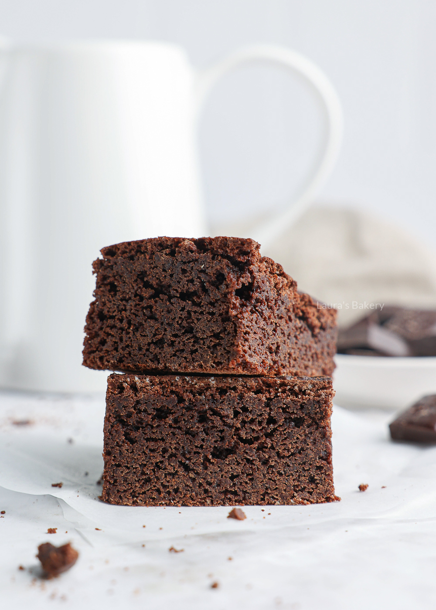
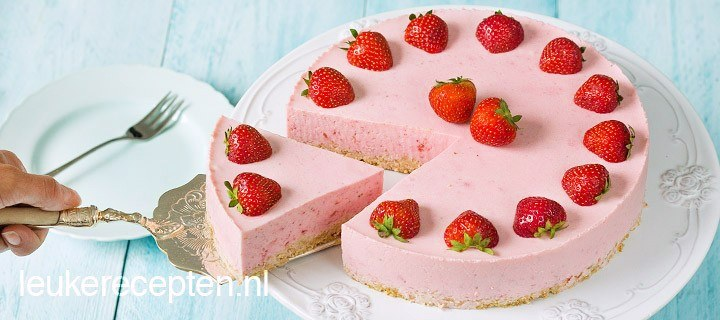

Iets typisch na een heerlijke maaltijd: een lekker toetje! Hier heb ik een paar heerlijke toetjes recepten:
Mijn recepten
Brownies
Ingredienten

- 60 g ongezouten roomboter
- 150 g fijne kristalsuiker
- 75 g donkerbruine basterdsuiker
- 125 g pure chocolade
- 2 eieren
- 1 eetlepel stroop
- 1 zakje vanillesuiker
- 100 g bloem
- 20 g cacaopoeder
- 1 theelepel bakpoeder
Voorbereiding
Doe de boter, beide soorten suiker, chocola en stroop in een pannetje. Zet het op een laag vuur en roer door tot de boter en chocolade zijn gesmolten. De suikerkorrels hoeven niet te smelten. Laat het mengsel nu afkoelen. Kamertemperatuur is goed, maar lauwwarm mag ook
Klop ondertussen de eieren en het vanille-extract luchtig. Voeg het chocolademengsel toe en mix op een lage snelheid tot een egaal mengsel
Klop ondertussen de eieren en het vanille-extract luchtig. Voeg het chocolademengsel toe en mix op een lage snelheid tot een egaal mengsel
Giet het beslag in een met bakpapier beklede vorm van 20×20 cm en spreid gelijkmatig uit. Bak de brownie in 25 minuten op 190 °C (boven- en onderwarmte)
Laat de brownie volledig in de vorm afkoelen voordat je hem eruit haalt en in stukken snijdt. Geniet!
Citroen maanzaad cake
Ingredienten

- 1 mix voor cake 400 gram
- 150 gram roomboter, op kamertemperatuur
- 4 eieren medium
- 50 ml halfvolle melk
- 2 citroenen
- 12 gram maanzaad
- 50 gram lemon curd
Voorbereiding:
Verwarm de oven voor op 160 graden
Boen de citroenen schoon en rasp de gekleurde schil van de vrucht. Snijd de citroenen doormidden en pers deze uit. Weeg het maanzaad, de citroenrasp en citroensap af in een bakje en laat dit minimaal 5 minuten staan
Weeg de boter af. Doe de boter in een beslagkom en roer het met de mixer op een middelmatige snelheid tot een romige massa
Voeg vervolgens de mix voor cake, de eieren en de melk toe en klop het geheel in 1 minuut op lage snelheid tot een glad beslag
Klop het beslag daarna in 2 minuten op hoge snelheid tot een luchtig beslag. Spatel het maanzaad citroen mengsel door het beslag. Vul nu een ingevette cakevorm met het beslag
Plaats de cake in het midden van uw voorverwarmde oven en bak deze in 60-70 minuten gaar. Laat de cake afkoelen op een rooster. Verwarm de lemon curd een beetje en verdeel dit over de afgekoelde cake met een kwastje. Geniet!
Aardbeien kwarktaart
Ingredienten

- 80 g boter
- 175 g mariakoekjes
- 500 g aardbeien
- 500 g kwark
- 1 citroen
- 2 blaadjes gelatine
- 250 g slagroom
- 150 g witte basterdsuiker
- Een springvorm van 22-24 cm
Voorbereiding:
Bekleed de bodem van een springvorm met bakpapier. Laat de gelatine weken in koud water. Kruimel de koekjes fijn met de hand of doe ze in een keukenmachine. Smelt de boter en schep deze door de koekjes. Verdeel de koekkruimels over de bodem van de springvorm en druk aan met de bolle kant van een lepel. Zet de springvorm zolang in de koelkast
Maak de aardbeien schoon en houd er een aantal apart voor de garnering. Doe de rest van de aardbeien in een keukenmachine en blend helemaal fijn, dit kan ook met de staafmixer. Verwarm het citroensap in een pannetje en voeg de gelatine toe en roer totdat deze in opgelost en laat daarna wat afkoelen
Schep de kwark in een grote kom en roer de gepureerde aardbeien en de basterdsuiker erdoor. Giet ook het citoen-gelatine mengsel erbij en roer door. Klop de slagroom stijf en schep deze ook door de aardbeien-kwark. Giet het mengsel over de koekjes bodem en laat minimaal 3 uur goed stijf worden in de koelkast (bij voorkeur een hele nacht). Garneer de kwarktaart met verse aardbeien. Geniet!